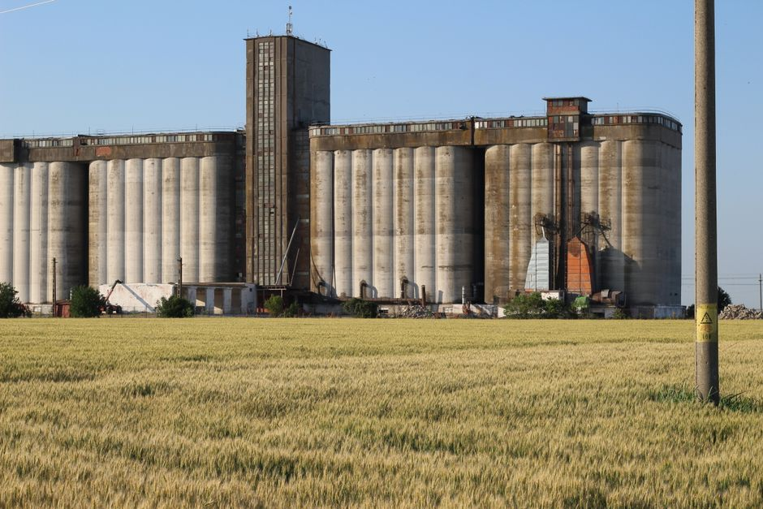
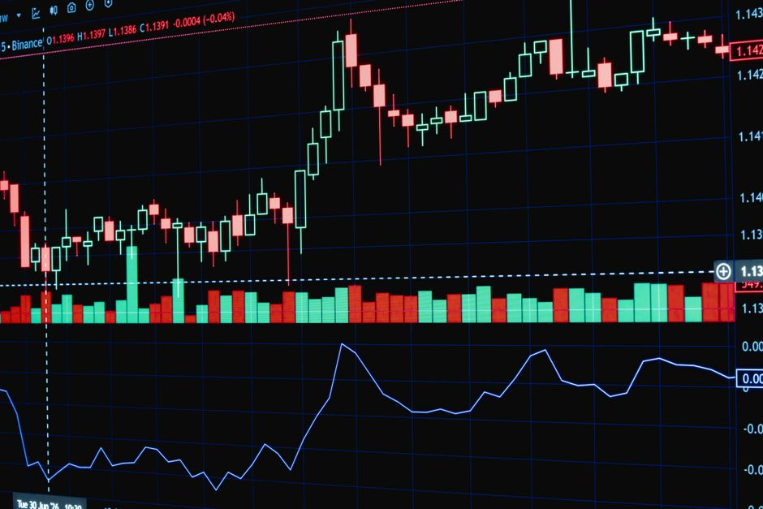

Press Release Title
Want the complete 2,000-word benchmark & telemetry?
Access the full article with complete empirical tables, methodology notes, and citation downloads.
The official information desk for Renalytica. Track new intelligence suite publications, high-frequency data telemetry alerts, regional desk expansions, and corporate developments across African commerce.
Official press announcements for major multi-country intelligence publications and treasury benchmarks.

Renalytica today announced the full commercial release of its flagship 2026 Agribusiness Intelligence Suite. The 380-page multi-country intelligence resource delivers verified production figures, harvest telemetry, and price trajectory forecasts across 14 key African jurisdictions.

Renalytica has released its comprehensive treasury risk benchmark, evaluating exchange rate pass-through mechanics, dollar liquidity availability, and local currency debt vulnerabilities across eight regional central banking regimes.
Fast-moving, empirical data alerts published directly from our active field observation nodes and maritime registers.
Organizational updates, strategic data partnerships, and executive speaking appointments.
In response to surging demand for localized market data across the Great Lakes region, Renalytica has established a permanent research bureau in Nairobi, Kenya.
Renalytica has signed formal data integration agreements with leading private agricultural warehouse operators, linking certified silo capacity directly into forecasting models.
Dr. Arinze Okafor, Senior Fellow at Renalytica, has been invited to deliver the opening technical keynote on "Mitigating Currency Volatility and Input Inflation in Regional Food Processing" at the Kempinski Hotel Gold Coast City, Accra, on October 14, 2026.
| TIME (WAT) | SECTOR | HEADLINE / TELEMETRY DATA POINT | STATUS |
|---|---|---|---|
| 09:45 AM | Agri-Commodity | Kano Dawanau Market: Sorghum wholesale trade volumes reach 4,200 metric tons today; prices stable at ₦48,500/100kg bag. | ✓ VERIFIED |
| 08:30 AM | Maritime/Ports | Tema Port (Ghana): Berthing delay for dry-bulk fertilizer vessels drops to 1.5 days; discharge throughput up 12%. | ✓ VERIFIED |
| Yesterday | Currency/FX | Kenya Shilling (KES): Interbank FX spread tightens to 0.4% following central bank tea auction receipts. | ✓ VERIFIED |
| Sep 02 | Energy/Freight | Lagos-Ibadan Expressway: Diesel depot gate price clears at ₦1,240/liter, flat for the second consecutive week. | ✓ VERIFIED |
| Aug 31 | FMCG/Retail | Nairobi FMCG Telemetry: Modern trade penetration for packaged cooking oils holds at 18.2% in urban retail hubs. | ✓ VERIFIED |
Reporting on African commerce or conducting academic/institutional research? Renalytica provides broadcast journalists, economic fellows, and corporate strategy teams with verified empirical datasets, methodology whitepapers, on-the-record executive commentary, and brand assets.
Comprehensive econometric working papers, field survey sampling protocols, and regression telemetry datasets for institutional and academic use.
A concise briefing document detailing our founding story, 180-market physical footprint, primary telemetry methodology, and leadership team.
Vector SVG and high-resolution PNG logos (Navy #0B192C, Momentum Orange #FF8000, White), color palettes & editorial typography guidelines.
High-resolution leadership portraits and verified bios of our managing partners and senior fellows for conference programs and broadcast features.
Our senior econometricians and field directors are available for broadcast interviews, panel discussions, and off-the-record background briefings.
www.renalytica.com.
Join 6,400+ financial journalists, institutional analysts, and corporate strategy directors who receive our embargoed research releases and live data telemetry alerts.
“Immediate delivery. Zero marketing spam. One-click unsubscribe at any time.”
Access the full article with complete empirical tables, methodology notes, and citation downloads.
Provide your institutional or newsroom credentials to receive verified PDF research working papers, high-resolution brand vectors, or corporate briefing manifests.
We acknowledge all press inquiries within 60 minutes.